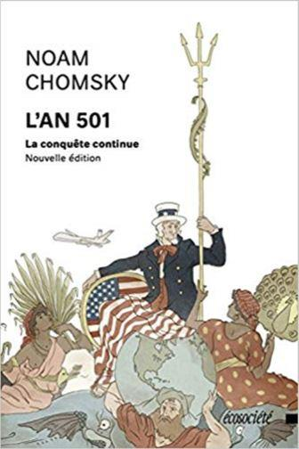
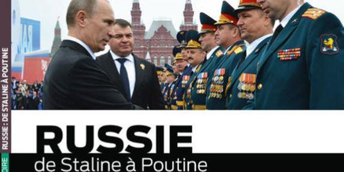
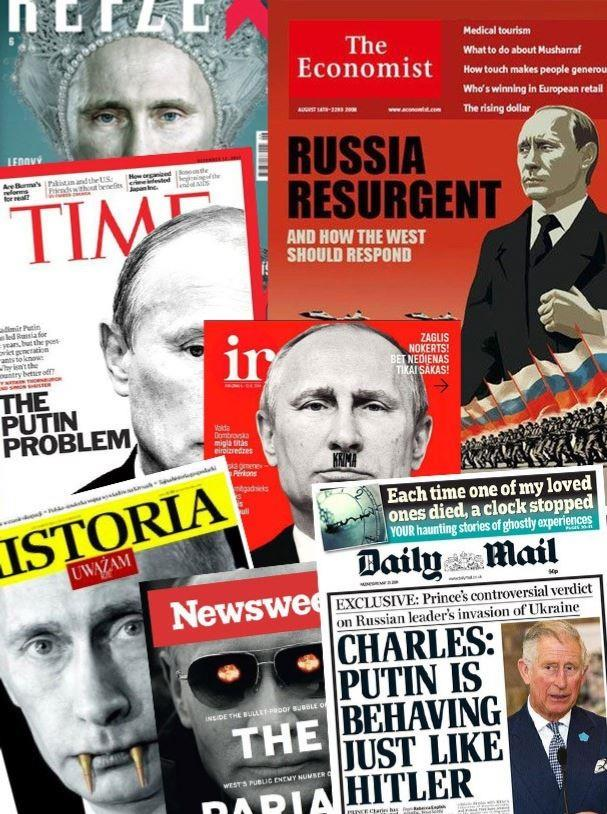
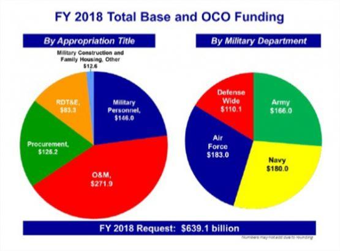
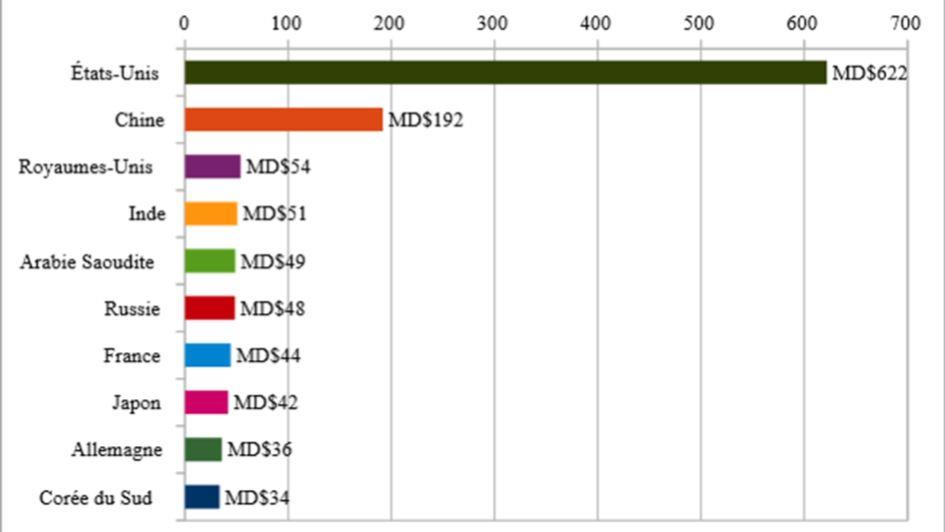
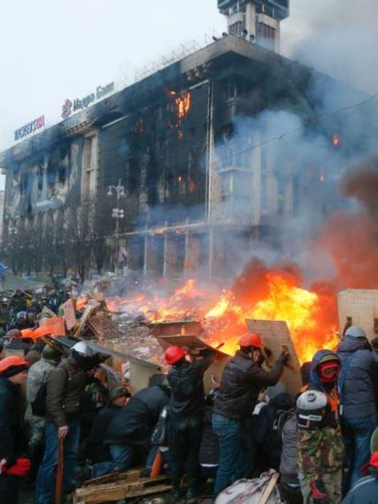

De l’Ukraine à l’affaire Skripal, de la Syrie au Russiagate, l’actualité offre sa ration quotidienne de ce qu’il faut bien appeler la nouvelle « guerre froide ». Comme au bon vieux temps, le monde est divisé entre les bons et les méchants, et on subit une avalanche impressionnante de propagande. Ce n’est pas nouveau.
Pour accréditer une menace soviétique suspendue comme l’épée de Damoclès au-dessus des démocraties occidentales, on prétendit à plusieurs reprises, jusque dans les années 80, que l’arsenal militaire de l’URSS était nettement supérieur à celui des USA. Or c’était complètement faux. « Pendant toute cette période, note Noam Chomsky, de grands efforts ont été déployés pour présenter l’Union soviétique plus forte qu’elle ne l’était réellement, et prête à tout écraser. Le document le plus important de la guerre froide, le NSC 68 d’avril 1950, cherchait à dissimuler la faiblesse soviétique que l’analyse ne manquait pas de révéler, de façon à donner l’image voulue de l’État esclavagiste qui poursuivait implacablement le contrôle absolu du monde entier » (« L’an 501, La conquête continue », EPO, 1994).
Cette menace systémique était bel et bien une fiction. L’arsenal soviétique fut toujours inférieur à celui de ses adversaires. Les dirigeants de l’URSS n’ont jamais envisagé d’envahir l’Europe occidentale, et encore moins de « conquérir le monde ». En fait, la course aux armements - et notamment à l’armement nucléaire - est une initiative typiquement occidentale, une sorte d’application à la chose militaire du dogme libéral de la concurrence économique. C’est pourquoi cette compétition mortifère - où l’on frôla l’apocalypse atomique au moins une fois, en octobre 1962 - fut sciemment entretenue par Washington dès le lendemain de la victoire alliée sur l’Allemagne et le Japon.
Cyniquement, le camp occidental avait deux bonnes raisons de provoquer cette compétition : la guerre avait exténué l’URSS (27 millions de morts, 30% du potentiel économique anéanti), et elle avait fantastiquement enrichi les USA (50 % de la production industrielle mondiale en 1945).
Forgée par le conflit mondial, cette suprématie économique sans précédent créait les conditions d’une politique étrangère agressive. Bien entendu, cette politique avait un habillage idéologique : la défense du « monde libre », de la démocratie et des droits de l’homme contre le « totalitarisme soviétique ». On peut d’ailleurs mesurer le sérieux de ces motivations démocratiques au soutien apporté par Washington, dans la même période, aux dictatures de droite les plus sanguinaires. Mais cette politique impérialiste, conformément à la doctrine forgée par George Kennan en 1947 (le contaminent du communisme) avait surtout un objectif inavoué : l’épuisement progressif de l’URSS - rudement éprouvée par l’invasion hitlérienne - dans une compétition militaire où le système soviétique allait dilapider les moyens qu’il aurait pu consacrer au développement. Force est de constater que cette politique a porté ses fruits, de Harry Truman (1945-1952) à George W. H. Bush (1988-1992).
Surclassée par un capitalisme occidental qui bénéficiait de conditions extrêmement favorables au lendemain de la Seconde Guerre mondiale, l’Union soviétique a donc fini par quitter la scène en 1991 au terme d’une compétition perdue d’avance. Pourtant rien ne semble avoir changé, et la guerre froide, aujourd’hui, continue de plus belle. Près de trente ans après la disparition de l’URSS, l’hostilité occidentale à l’égard de la Russie ne faiblit pas.
« De Staline à Poutine », un récit où transpire la bonne conscience occidentale attribue toutes les tares au camp adverse, incriminant une puissance maléfique dont la résilience ferait peser une menace irrésistible sur le monde prétendument civilisé.
Comme si l’affrontement Est-Ouest devait absolument survivre au pouvoir communiste, on s’obstine à désigner dans la Russie actuelle une sorte d’ennemi systémique, l’empire du mal soviétique ayant simplement été repeint aux couleurs russes pour les besoins de la cause.
Pour les élites dirigeantes occidentales, il faut croire que Moscou reste Moscou, et que la menace venant de l’Est résiste aux changements politiques. Communisme ou pas, l’agenda géopolitique du « monde libre » demeure irréductiblement anti-russe. En un sens, les russophobes d’aujourd’hui pensent comme le général de Gaulle, qui décelait la permanence de la nation russe sous le vernis soviétique.
Mais ces obsédés de l’ogre moscovite en tirent des conclusions diamétralement opposées. Visionnaire, farouchement attaché à l’idée nationale, le fondateur de la Cinquième République trouvait dans cette permanence une bonne raison de dialoguer avec Moscou. Les russophobes contemporains, au contraire, y voient le prétexte d’un affrontement sans fin. De Gaulle voulait dépasser la logique des blocs en apaisant les tensions avec la Russie, tandis qu’ils entretiennent ces tensions afin de souder dans la haine anti-russe le bloc occidental.
Le discours dominant en Occident durant la première « guerre froide » (1945-1990) ne cessait d’attribuer la responsabilité du conflit à l’expansionnisme soviétique et à l’idéologie communiste. Mais si la guerre froide continue aujourd’hui, c’est la preuve qu’un tel discours était mensonger. Si le communisme était responsable de la guerre froide, l’effondrement du système soviétique aurait sonné le glas de cet affrontement, et le monde aurait tourné la page d’un conflit qu’on attribuait - à tort - à l’incompatibilité entre deux systèmes idéologiques. Or il n’en est rien. La Russie n’est plus communiste, et l’Occident vassalisé par Washington l’accuse quand même des pires horreurs, expulse ses diplomates sous de faux prétextes, lui inflige des sanctions économiques, exerce une pression militaire à ses frontières, bombarde ses alliés au Moyen-Orient, et lui prête même le pouvoir machiavélique de faire élire le candidat de son choix à la Maison-Blanche.
Cette renaissance de l’hystérie anti-moscovite est d’autant plus significative qu’elle succède à une décennie, les années 90, dont la tonalité géopolitique était fort différente. Mais cette époque est révolue. Fini, le temps où la Russie déliquescente de Boris Eltsine (1991-2000) avait les faveurs du « monde libre ». Soumise à la « thérapie de choc » libérale, elle s’était placée dans l’orbite occidentale. L’espérance de vie de la population régressa de dix années, mais ce détail importait peu. La Russie rejoignait le monde merveilleux de l’économie de marché et de la démocratie à l’occidentale.
Son équipe dirigeante, elle, touchait les dividendes d’une reddition qui lui valait son adoption par l’Occident. Malheureusement pour ce dernier, cette lune de miel prit fin au début des années 2000. Car la Russie a redressé la tête.
Avec Vladimir Poutine, elle a recouvré sa souveraineté et défendu ses intérêts nationaux. Tordant le cou aux « oligarques », elle a repris le contrôle des secteurs-clé de son économie - notamment dans l’énergie - que lorgnaient avec gourmandise les requins de la finance mondialisée.
Cette renaissance soudaine a provoqué un tollé en Occident. Une fois passé la parenthèse providentielle - du point de vue occidental - de l’ère Eltsine, le contaminent du communisme a repris du service sous la forme d’une diabolisation frénétique de la Russie. Tant qu’elle faisait allégeance aux Occidentaux, la Russie débilitée des années 90 ne lui portait pas ombrage : elle avait réintégré le droit commun des nations qui regardent bien sagement du côté de la bannière étoilée. Mais lorsqu’elle s’est émancipée de cette tutelle, la Russie dégrisée de Vladimir Poutine a suscité une hargne peu commune. Comme au temps de la guerre froide, on s’est mis à accuser Moscou de tous les maux.
Une interminable litanie a de nouveau envahi les médias du « monde libre ». Menace systémique pour le monde occidental, péril mortel pour ses intérêts, ferment corrosif pour ses valeurs, brute épaisse ne comprenant que la force, État-voyou imperméable au code de conduite des nations civilisées : toutes les nuances du répertoire y sont passées.
Concentré de tous les poncifs russophobes, ce discours belliciste, malheureusement, ne fut pas seulement un discours. Les actes ont suivi. Depuis quinze ans, les USA organisent délibérément une confrontation globale avec Moscou qui a deux caractéristiques : aucun président américain n’y a fait exception, et elle se déploie sur trois fronts principaux. Complexe militaro-industriel oblige, c’est d’abord sur le terrain de la course aux armements que Washington a déclenché les hostilités. En 1947, les USA voulaient « contenir » le communisme en enserrant l’URSS dans un réseau d’alliances militaires prétendument défensives (OTAN, OTASE, Pacte de Bagdad). Dans les années 90, l’URSS n’existe plus. Pourtant, la politique américaine est toujours la même, et l’alliance atlantique survit miraculeusement à la menace qu’elle était censée conjurer. Pire, Washington élargit unilatéralement l’OTAN jusqu’aux frontières de la Russie, violant l’engagement pris auprès de Gorbatchev qui accepta la réunification de l’Allemagne en échange d’une promesse de non-extension de l’alliance atlantique dans l’ex-glacis soviétique.
Cette offensive géopolitique de l’OTAN avait évidemment un corollaire militaire. Ce fut d’abord l’installation, chez les nouveaux États-membres d’Europe orientale, d’un bouclier antimissile américain. Impensable au temps de l’URSS, ce dispositif fait peser sur Moscou la menace d’une première frappe et rend caduc tout accord de désarmement nucléaire.
Ce fut ensuite la multiplication des manœuvres militaires conjointes aux frontières occidentales de la Fédération de Russie, de la Baltique à la Mer Noire. Sans oublier, bien entendu, la toile de fond de cette démonstration de force : colossal, le budget militaire US représente la moitié des dépenses militaires mondiales, crevant en 2018 le plafond des 700 milliards de dollars.
En augmentation constante, il équivaut à 9 fois celui de la Russie (13 fois si l’on tient compte du budget militaire de l’OTAN). Au demeurant, l’essentiel des dépenses nouvelles accroît la capacité de projection des forces et n’a aucun caractère défensif, conformément à la doctrine de « l’attaque préemptive » fixée par les néoconservateurs depuis 2002. Dans ce domaine, rien n’arrête le progrès, et Donald Trump a annoncé, en juillet 2018, qu’il créerait même une « force spatiale » distincte de l’US Air Force pour éviter que les Russes et les Chinois ne dominent ce nouveau théâtre d’opérations.
Après la course aux armements, la déstabilisation de « l’étranger proche » fut le deuxième front ouvert par les USA et leurs vassaux contre Moscou.
En fomentant un coup d’État en Ukraine (février 2014), ils entendaient détacher ce pays de son puissant voisin afin d’isoler davantage la Russie, dans la foulée des « révolutions colorées » qui se déroulèrent en Europe orientale et dans le Caucase.
Depuis 2014, l’Ukraine est donc en proie à une crise intérieure gravissime. Le coup d’État a porté au pouvoir une clique ultra-nationaliste dont la politique a humilié la population russophone des régions orientales.
Cette provocation délibérée des autorités usurpatrices de Kiev, soutenues par des groupes néo-nazis, a poussé les patriotes du Donbass à la résistance et à la sécession. Mais aucun char russe ne foule le territoire ukrainien, et Moscou a toujours privilégié une solution négociée de type fédéral. L’OTAN stigmatise et sanctionne la Russie pour sa politique à l’égard de l’Ukraine, alors que la seule armée qui tue des Ukrainiens est celle de Kiev, portée à bout de bras par les puissances occidentales. Dans cet « étranger proche », il est clair que c’est l’Occident qui défie outrageusement la Russie à ses frontières, et non l’inverse. Que dirait-on à Washington si Moscou menait des manœuvres militaires conjointes avec le Mexique et le Canada, et provoquait ouvertement la déstabilisation de l’Amérique du Nord ?
Après la course aux armements et la déstabilisation de « l’étranger proche », c’est sur le terrain syrien que Washington a entrepris de contrecarrer Moscou. Le projet de déstabilisation du Moyen-Orient remonte en réalité au début des années 2000. Ancien commandant en chef des forces US en Europe, le général Wesley Clark révéla le contenu d’un mémo classifié du Pentagone provenant du bureau du secrétaire à la Défense Donald Rumsfeld : « Il disait que nous allions attaquer et détruire les gouvernements de sept pays en cinq ans : nous allions commencer par l’Irak, puis ensuite nous irions en Syrie, au Liban, en Libye, en Somalie, au Soudan et enfin en Iran. » Clark décrivit aussi la véritable visée des néoconservateurs du Pentagone : « Ils voulaient que nous déstabilisions le Moyen-Orient, pour le retourner sens dessus dessous, afin de le voir finalement tomber sous notre contrôle. » (cité par F. William Engdahl, « Le charme discret du Djihad », Demilune, 2018). Cette stratégie secrète visait - et elle vise toujours - à l’émiettement du Moyen-Orient en une myriade d’entités ethniques et religieuses rivales, faibles et manipulables à volonté.
Or la réalisation de ce programme implique la destruction ou le démembrement des États souverains de la région, et notamment de ceux qui persistent dans leur refus de s’aligner sur l’axe Washington-Tel Aviv. La tentative d’anéantissement de l’État séculier syrien, principal allié arabe de l’URSS, puis de la Russie, constitue le dernier avatar de cette stratégie, dont l’Afghanistan, l’Irak, le Soudan, la Libye et le Yémen ont aussi fait les frais - et continuent de subir les méfaits à ce jour.
Pour parvenir à ses fins, l’empire du chaos a orchestré une violence généralisée qui avait pour but de déstabiliser les États récalcitrants - comme la Syrie - tout en fournissant le prétexte d’une intervention militaire - directe ou indirecte - prétendument destinée à éradiquer le terrorisme. En somme, la stratégie des « néocons » vise à entretenir la terreur tout en faisant semblant de la combattre, Washington tirant profit de la situation sur les deux tableaux, toute avancée du terrorisme justifiant la présence armée des USA, et toute défaite infligée au terrorisme se trouvant portée au crédit de leur fermeté à l’encontre de ces forces maléfiques.
Or cet extraordinaire tour de passe-passe stratégique eut son banc d’essai dans l’organisation du « djihad » antisoviétique en Afghanistan dès la fin des années 70. Conseiller à la sécurité nationale de Jimmy Carter, Zbigniew Brzezinski organisa le recrutement de djihadistes issus du monde entier, et les fit acheminer illégalement jusqu’à l’Afghanistan via le Pakistan. Le but avoué de cette manœuvre était de créer « un Vietnam soviétique ».
Washington fit monter la tension à l’intérieur de l’Afghanistan afin de forcer l’URSS à réagir en intervenant au profit du gouvernement pro-communiste de Kaboul. Issu de l’aristocratie polonaise, Brzezinski était obsédé par l’Union soviétique. Il théorisa la stratégie américaine consistant à déstabiliser la « ceinture verte » (musulmane) bordant le flanc sud de la Russie. À ses yeux, les djihadistes rebaptisés « combattants de la liberté » constituaient des recrues de choix pour une « guerre sainte » contre le communisme athée. Moscou tomba dans le piège tendu par Washington, et cette erreur lui coûta très cher. Pour mener à bien la déstabilisation du gouvernement afghan, les stratèges de la CIA s’appuyèrent sur la puissance financière saoudienne, qui versa aux bandes armées des sommes faramineuses. Enfin, la logistique du djihad antisoviétique passa par l’entremise d’Oussama Ben Laden, dont l’organisation fournit un canal de recrutement pour les combattants affluant du monde musulman. Dès le début des années 80, le dispositif terroriste qu’on désignera bientôt sous l’appellation d’Al-Qaida était donc en place, coordonné et sponsorisé par l’axe Washington-Riyad.
En réalité, la « guerre froide » n’a jamais cessé. Course frénétique aux armements, déstabilisation de « l’étranger proche » et chaos organisé dans la « ceinture verte » qui longe le flanc sud de la Russie sont les trois fronts ouverts par les stratèges de Washington, depuis les années 2000, pour relancer l’affrontement Est-Ouest. Cette entreprise hégémonique est une œuvre de longue haleine qui prolonge la stratégie de contaminent définie par George Kennan dès 1947. Cet affrontement permanent justifie un effort militaire dont le président Eisenhower n’avait même pas l’idée lorsqu’il alerta l’opinion américaine à la fin de son mandat sur les dangers du « complexe militaro-industriel ». Accrochés à leur rêve d’hégémonie planétaire, les USA compensent aujourd’hui par un activisme tous azimuts le déclin de leur économie et l’effondrement de leur modèle de société. Adossée à l’alliance russo-chinoise et russo-iranienne, la résistance victorieuse de la Syrie vient d’administrer une leçon aux bellicistes de Washington. Les USA se vantent d’avoir gagné la première guerre froide. Qu’ils gagnent aussi la seconde est peu probable. Comme la précédente, ils l’ont déclenchée pour imposer au reste du monde le modèle libéral - ou prétendu tel - qui leur garantit depuis 1945 un accès privilégié aux matières premières et aux marchés mondiaux. Mais la réussite économique de la Chine et la renaissance politique de la Russie sont des pavés monumentaux jetés dans la mare de cette hégémonie finissante. Et les litanies sur la « démocratie » et les « droits de l’homme » finiront bien par lasser tous ceux qui voient quel usage en font les « Docteur Folamour » de Washington.
Partager cette page